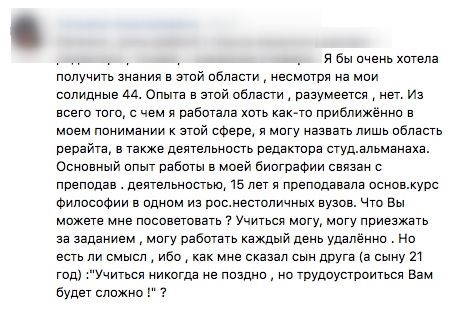
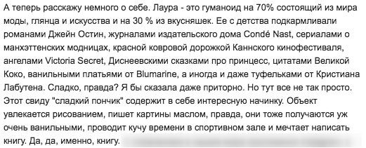
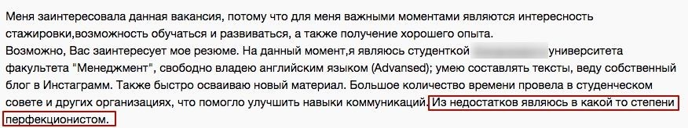
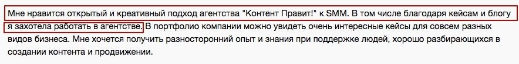
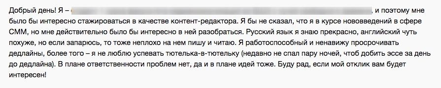
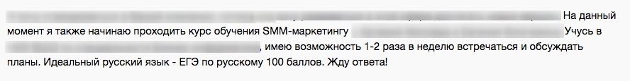

Как НЕЛЬЗЯ писать работодателю
Частые ошибки в сопроводительных письмах.
Крик о помощи.
Давить на жалость, это дурной тон, тем более в первом письме.
Можно встречають письма с таким текстом: у меня нет образования,
мне уже далеко не двадцать, поэтому войдите в мое положение.
Я вырастила пятерых детей и одного котика, но, к сожалению, у меня нет опыта работы.
Мне сказали, что SMM — это для меня, поэтому помогите!
Пример типичного «Крика о помощи» в качестве отклика на вакансию.
Для многих руководителей не критичен возраст, образование или опыт работы. Но они никогда не отвечаю (и точно знаю, что знакомые мне представители агентств тоже не отвечают) на «Крики о помощи».
Во-первых, это манипулятивный ход, который сразу неуместен для отношений сотрудник-работодатель. Нам сразу предлагают «войти в положение», организовать гуманитарную помощь и так далее.
Во-вторых, странно, когда в 2021 году человек из любого города не может найти информации для обучения или варианта для получения опыта. В наше время тонны знаний лежат в открытом доступе.
Для меня эти письма читаются как:
«Я ничего не умею и ничему не хочу учиться, а гуглить мне лень, но очень нужны деньги,
авось вы дадите».
Самолюбование.
Хвастаться достижениями — полезно, показывать кейсы — просто супер, доказывать работодателю, что вы ему пригодитесь — тоже замечательно. Но только если это не превращается в поток сознания, как на следующем скриншоте:
Если информация абсолютно никак не относится к вакансии — не надо давать ее работодателю, вы еще успеете познакомиться с ним поближе. В этом письме непонятно, хотела ли девушка выделиться, или просто использовала написанное ею письмо для какого-то глянцевого журнала, которое теперь можно рассылать всем работодателям. Что это, Бэрримор?
Вранье.
В рубрику «Вранье» у меня попадают заученные фразы из чужих удачных резюме, штампы из старых советов по трудоустройству, а также все, что явно противоречит здравому смыслу.
Если кандидат врет в сопроводительном письме, его точно не позовут на собеседование.
В это письмо автор впихнул штамп из анкеты, которую для примера дают HR-специалисты. Штамп звучит так: «говорите, что ваш единственный минус — это перфекционизм и желание перерабатывать». Явная неправда, написанная только для того, чтобы понравиться работодателю.
Еще один признак вранья — это приписываемые себе заслуги, не соответствующие резюме кандидата. Семилетний опыт работы в 18 лет, наличие титулов, званий и прочего в SMM при отклике на стажерскую вакансию, несоответствие ВУЗа, указанного в сопроводительному письме, реальному ВУЗу на странице в соцсети... Десятки вариантов. Бывает, что подделывают даже город проживания (несмотря на то, что вакансии удаленные!).
Как правильно написать сопроводительное письмо
Один из маркеров адекватности — если письмо падает четко туда, куда указано в резюме. Если я пишу объявление на сайте с вакансиями, а вы пишете в соцсетях, это вполне нормально. А вот если один и тот же человек присылает свое резюме и на тот сайт, и на корпоративную почту, и в личку, и куда только может дотянуться — выглядит весьма странно.
Ориентируйтесь на длину в 3—4 абзаца. Слишком длинные письма читать никто не будет, а слишком короткие, в одну строку, выглядят отпиской.
И еще несколько советов о том, как правильно писать сопроводительные письма:
-
Изучайте информацию о работодателе.
Если соискатели пишут, что читали наш блог или смотрели наш сайт — это уже плюс. Если они отмечают какой-то конкретный материал или идею (неважно какую), еще лучше — значит, они были внимательны, и им не все равно, в какой компании работать.
Человек заходил на наш сайт и читал наш блог — уже хорошо -
Не перечисляйте качества, а приводите примеры.
Самостоятельные прилагательные «ответственный», «увлеченный», «креативный» не говорят о вас ничего. Однажды молодой человек написал, что он соблюдает дедлайны и вообще работоспособный, и тут же привел пример: «недавно не стал несколько ночей, чтобы добить эссе до дедлайна». С конкретным примером вероятность, что в какое-то ваше качество поверят, гораздо выше.
Соискатель уверен, что он хорошо справляется с дедлайнами, и готов это подтвердить. -
Покажите, что вы читали текст вакансии и соответствуете требованиям.
Работодатели, как правило, четко пишут, какие требования являются обязательными. Покажите, что вы это знаете и умеете.

Например, девушка, чье сопроводительное письмо опубликовано ниже, откликнулась на вакансию, в которой были указаны еженедельные планерки в Москве и идеальный русский язык. Она сразу показала, что ее резюме будет соответствует ожиданиям заказчика.Покажите, что вы соответствуете ожиданиям работодателя.
Это выглядит жутко сложно! А можно попроще?
Можно. Если вы пишете сопроводительное письмо в первый раз (или давно его не писали), можно писать его, отвечая на следующие вопросы:
-
Чем вы будете полезны работодателю?
Каким требованиям вакансии вы соответствуете? (Смотрим упомянутые в вакансии требования)
-
Какие навыки и умения вы будете использовать?
Чем можете подтвердить их наличие? (Обращаем внимание на навыки и умения, которые хочет видеть работодатель)
-
Есть ли у вас конкретные достижения или кейсы, подтверждающие ваш опыт?
(Ищем, упоминалось ли в вакансии про то, каким должен быть опыт)
-
Что именно вас привлекает в компании, где вы хотите работать?
(Лучше не конкретно, вроде «Мне интересна эта сфера», а что-нибудь более живое, например: «читал на вашем сайте», «смотрел интервью», «вы круто делаете то-то и то-то» и т.д.)
-
Бонусный лайфхак.
Если очень-очень хочется попасть в конкретную компанию, проведите разведывательную работу: посмотрите, какой опыт и достижения указан в профилях сотрудников на сайте. Можно попробовать написать кому-нибудь из сотрудников, работающих в компании. Вполне возможно, они подскажут, что важно для работодателя и как попасть на собеседование, минуя стандартные рамки вакансии. Конечно, этот трюк сработает не во всех компаниях.
Подытожим.
Сопроводительные письма важнее, чем могут казаться на первый взгляд, ведь именно по ним вас оценивают в первую очередь. Напишите письмо, а потом представьте, что вы работодатель и перечитайте его еще раз. Это поможет вам избавиться от ненужной в письме информации. Удачных сопроводительных писем!